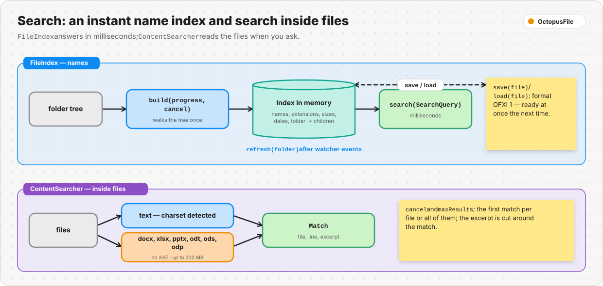
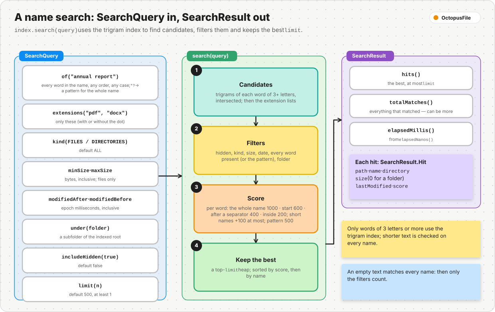
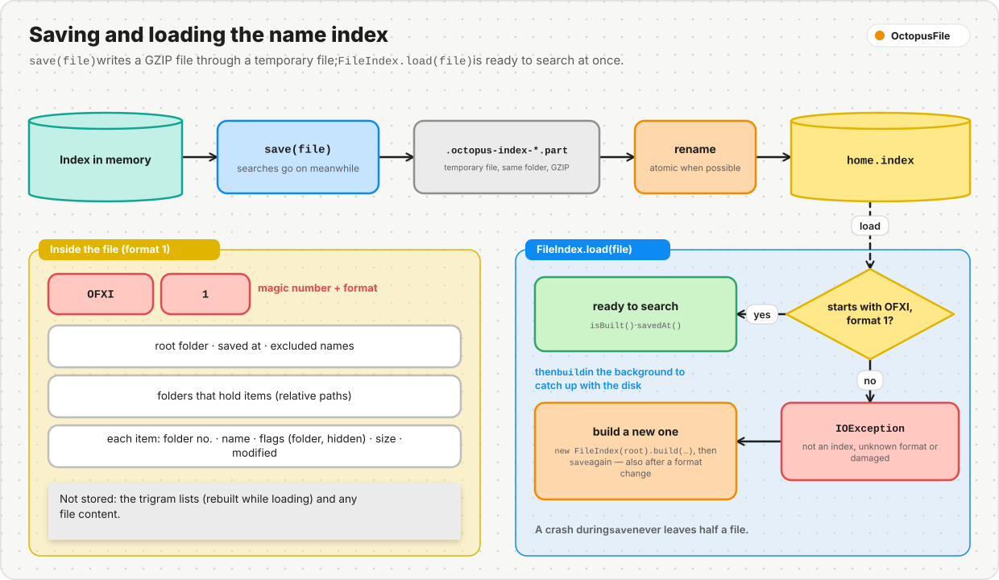
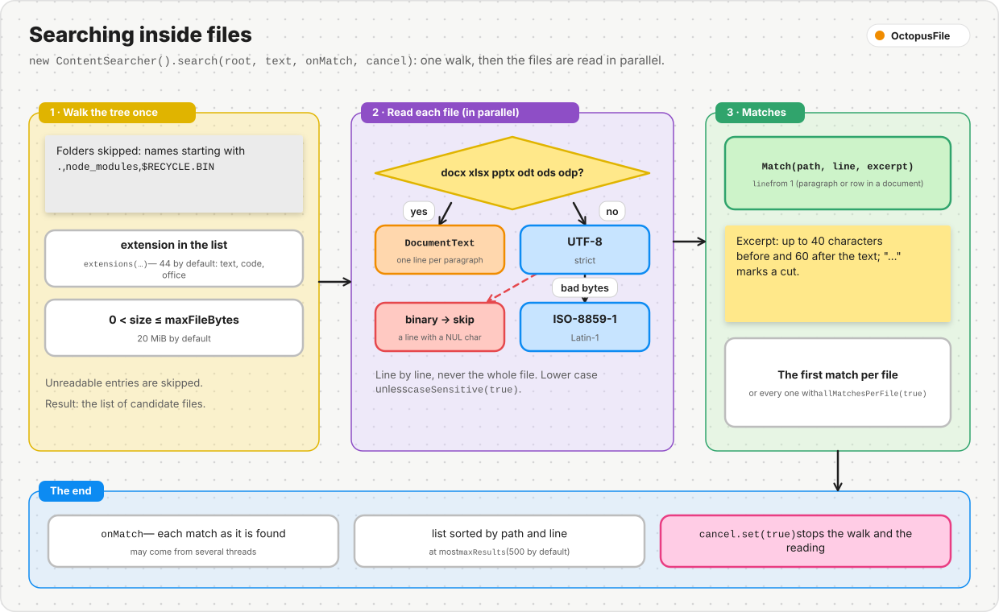
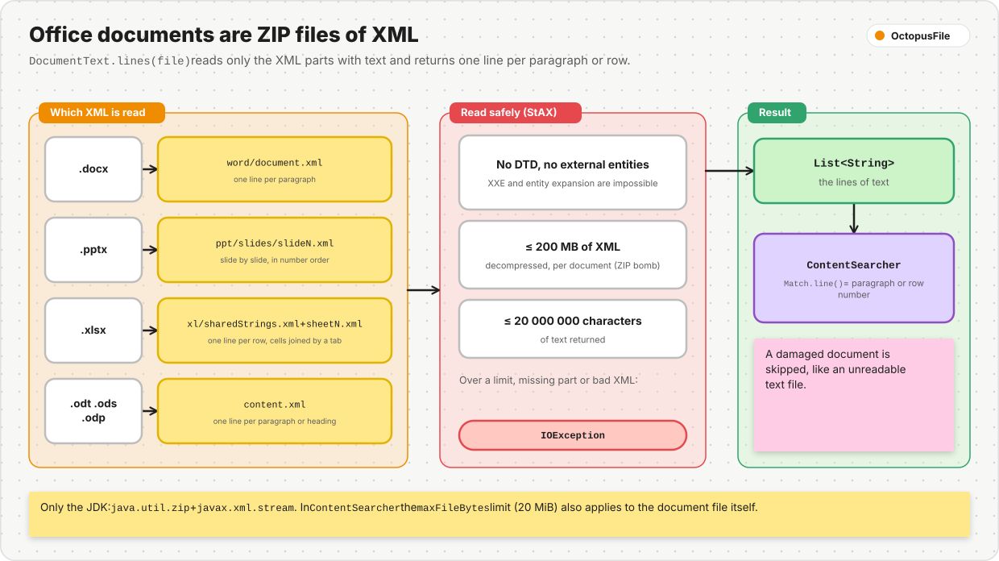

Search: name index and content search

Instant search by name — FileIndex#

An in-memory index of every name under a folder. Names are stored in columns (no object per file) with an inverted index of trigrams, so a search costs the number of candidates, not the number of files.
javaFileIndex index = new FileIndex(home).build(null, new AtomicBoolean());
SearchResult result = index.search(SearchQuery.of("report").extensions("pdf").limit(50));
for (SearchResult.Hit h : result.hits()) {
System.out.println(h.path() + " " + h.size());
}
SearchQuery | Meaning |
|---|---|
of("annual report") | every word must appear in the name (case-insensitive); * and ? are wildcards |
extensions("pdf", "docx") | only these extensions |
kind(Kind.FILES / DIRECTORIES) | files or folders only |
minSize, maxSize, modifiedAfter, modifiedBefore | size and date |
under(folder) | only inside a subfolder of the indexed root |
includeHidden(true), limit(n) | hidden items, maximum of results |
Other calls: build(progress, cancel) builds in parallel (one task per top folder) and can be cancelled; refresh(dir) re-reads one folder after a change; modifiedBetween(from, to, limit) lists the files changed in a period, newest first (FileExp uses it for its activity timeline); extensionStats() gives counts and bytes per extension.
Build time is dominated by the disk. Memory grows with the number of names (columns plus the trigram lists); measure it for your folders before indexing a whole drive.
Saving the index (since 1.4)#

save(file) writes the index to a compact file and FileIndex.load(file) reads it back much faster than a walk, so an application can search as soon as it starts. build keeps the loaded data searchable until the new index is ready.
javaPath cache = appData.resolve("home.index");
FileIndex index = Files.exists(cache) ? FileIndex.load(cache) // instant
: new FileIndex(home).build(null, null);
// ... search at once; then, in the background:
index.build(null, new AtomicBoolean()); // catch up with the disk
index.save(cache);
The file holds names, sizes and dates (no content). It is written to a temporary file and renamed, so a crash never leaves half a file; a damaged or foreign file is refused with an IOException. savedAt() says when it was saved.
Search inside files — ContentSearcher#

Finds the text files containing a string, in parallel, reading line by line (files are never fully loaded), UTF-8 first and Latin-1 as fallback, skipping binary files.
javaList<ContentSearcher.Match> matches = new ContentSearcher().maxResults(100)
.search(home, "total: 1.250", null, new AtomicBoolean());
for (ContentSearcher.Match m : matches) {
System.out.println(m.path() + ":" + m.line() + " " + m.excerpt());
}
Options: caseSensitive, allMatchesPerFile, maxFileBytes (20 MB by default), extensions(...) (about 40 text and code extensions by default). The onMatch callback receives results as they are found; set the AtomicBoolean to stop.
Office documents (since 1.4)#

ContentSearcher also looks inside Word, Excel, PowerPoint and LibreOffice files (docx, xlsx, pptx, odt, ods, odp); there line() is the number of the paragraph, or of the row in a spreadsheet. DocumentText.lines(file) gives that text directly. Only the JDK is used (the files are ZIP + XML), DTDs and external entities are never read, and at most 200 MB of XML is decompressed per document. Damaged documents are skipped.
DocExamplesTest